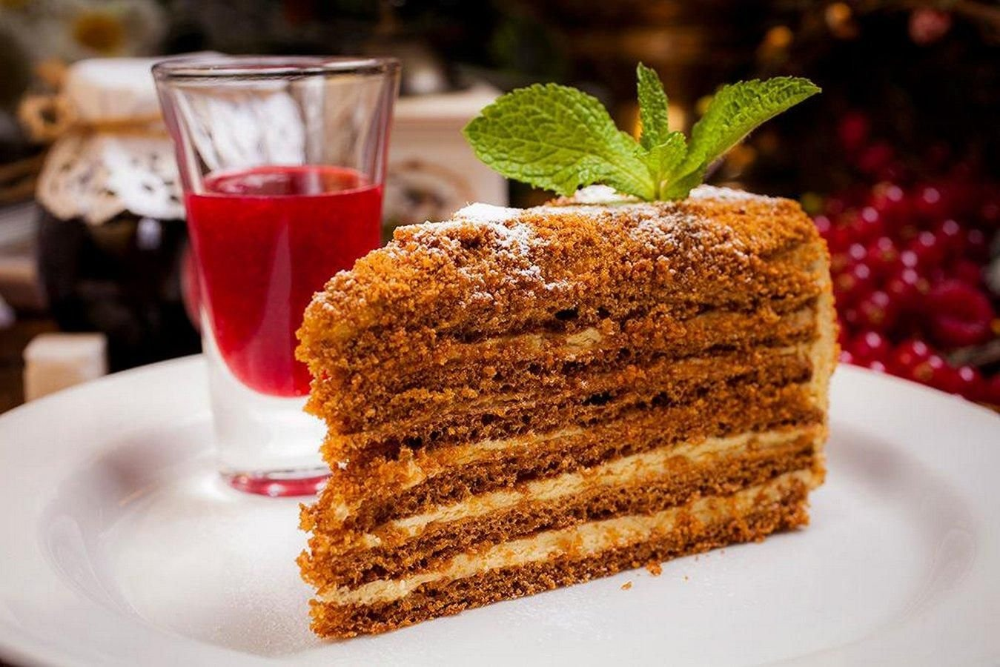

Кулинарный цех "Пирожок" 
Блюда по домашним рецептам - вам понравится!
Медовик

Медовик - это классический торт из нежных пластов медовых коржей, соединенных слоем крема на основе сгущенного молока.
Этот десерт всегда приносит радость и удовольствие каждому, кто им полакомится!
Ингредиенты:
- Мед
- Мука
- Сахар
- Сливочное масло
- Яйца
- Сгущенное молоко
Рецепт приготовления:
- В маленькой кастрюле смешайте мед, сахар и сливочное масло, доведите до кипения, затем снимите с огня и дайте остыть.
- Добавьте яйца в остывшую смесь и тщательно взбейте.
- Постепенно добавьте муку, тщательно перемешивая, пока не получится однородное тесто.
- Разделите тесто на несколько равных частей и раскатайте каждую в тонкий корж.
- Выпекайте коржи в предварительно разогретой до 180°C духовке до золотистого цвета.
- Дайте коржам полностью остыть, затем смажьте каждый корж сгущенным молоком и сложите один на другой.
- Украсьте верхний слой кремом из сгущенного молока.
- Дайте торту немного настояться в холодильнике перед подачей.
- Подавайте торт порционно и наслаждайтесь неповторимым вкусом! Приятного аппетита!